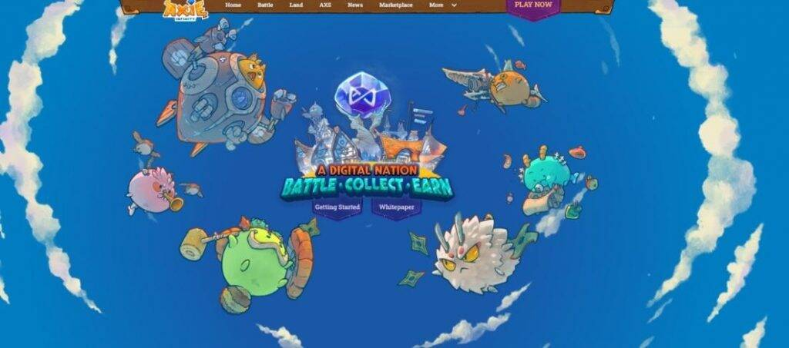
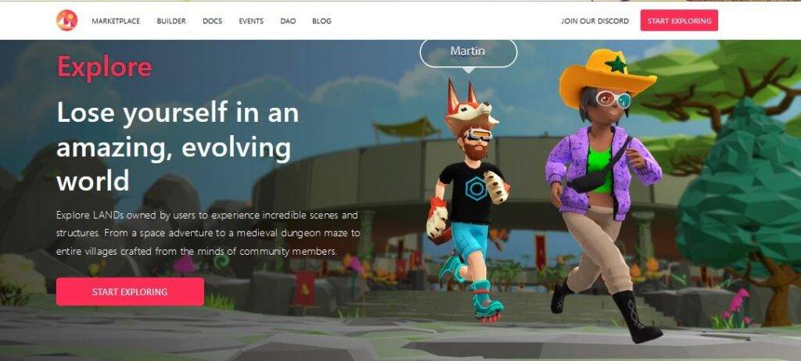
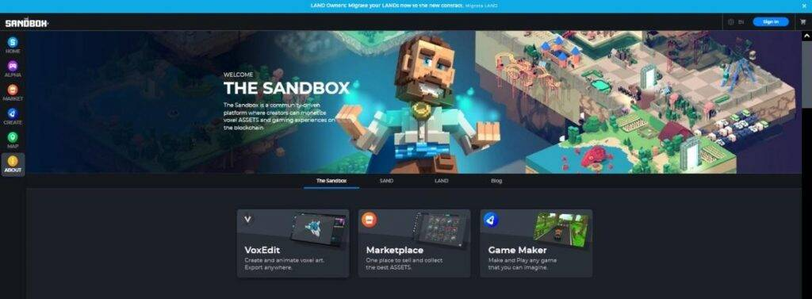
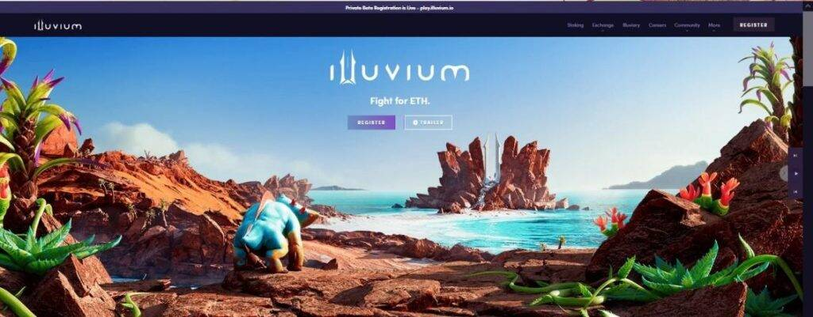
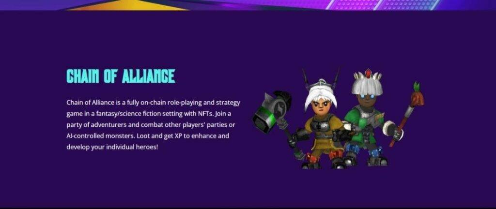
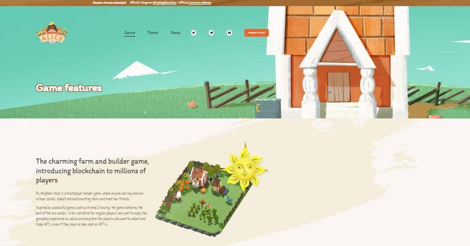
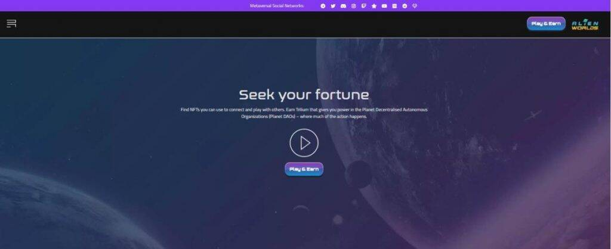
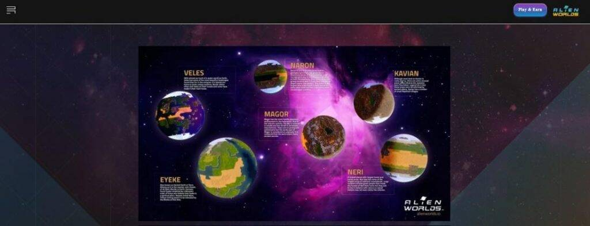
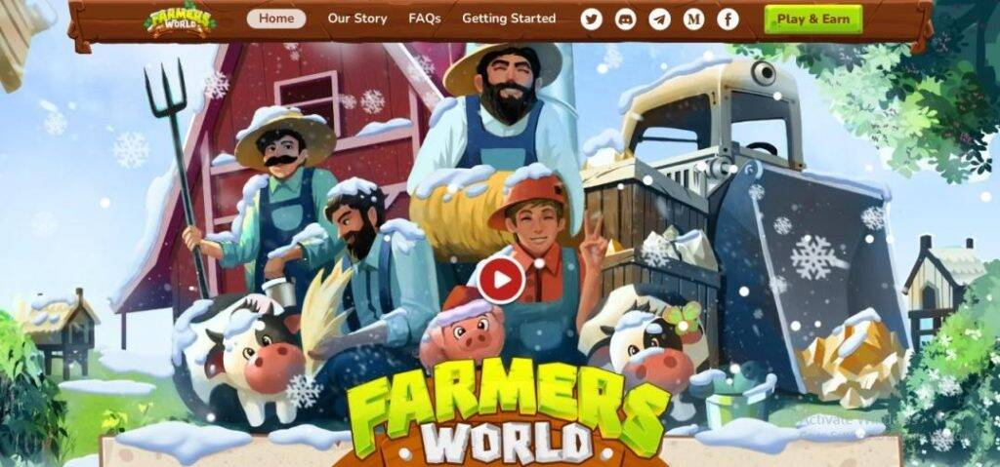
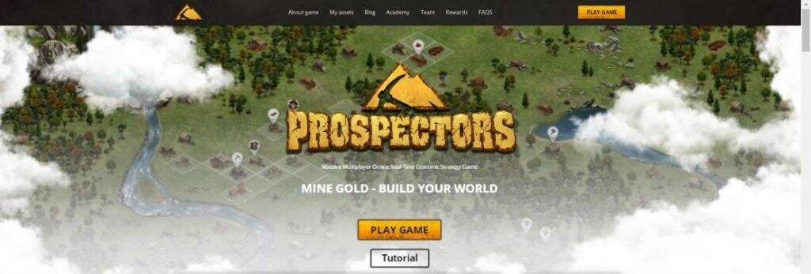

近年来，随着越来越多的企业接受其作为未来经济技术的地位，元宇宙一词变得越来越流行。虽然这个词越来越普遍地用作“互联网”和“在线”，但它的定义仍然相当模糊。由于元宇宙被描述为下一个“大事”，因此值得了解这个术语的全部内容。
元界：实时、身临其境的扩展现实
Metaverse是指为人们提供体验的技术，成为互联数字世界的一部分。它是希腊语meta（意思是超越）和“宇宙”这个词的组合，它几乎是现实世界的延伸。
真实的人使用在线游戏和应用程序进入这些3D“世界”中的其他人并与之互动，在那里他们将自己表示为化身。这些虚拟社区中的活动反映了物理世界中的活动。玩家可以创建物品，出售或购买它们，以及投资和奖励他人。 Metaverse无缝融合了游戏，虚拟现实，直播，加密货币和社交媒体，因为玩家在竞争产品的生态系统中移动。例如，从一个游戏中获得由某家公司开发的数字艺术品的玩家可以在另一家公司制作的另一款游戏中使用相同的物品。
与当今更常见的数字游戏不同，事情在元宇宙中实时发生 - 没有暂停，游戏结束或重置。此外，快速的互联网连接和强大的虚拟现实耳机提供了身临其境的体验，包括数字环境的360度视图。触觉手套和夹克提供物理触觉。
一些科技巨头和投资者认为元宇宙是计算技术的下一波浪潮，它始于大型机，然后转向个人和移动计算。
元界的主要先驱和推动者
甚至在马克·扎克伯格（Mark Zuckerberg）于2021年将Facebook更名为Meta之前，其他公司就一直处于元宇宙开发的最前沿。以下是一些领先的先驱者和早期推动者：
Epic Games是Fortnite的创建者，Fortnite是一款于2017年发布的多人射击游戏。它已经发展成为一个数字活动场所，用户可以参加舞会和虚拟音乐会。
Epic Games继续为开发人员和非创意人员提供端到端解决方案，以制作，分发和运营游戏和其他内容。它的开发人员可以跨品牌和平台移动，包括索尼，微软，任天堂，PC，iOS和Android。
作为工作相关软件的领导者，微软在2014年收购了Minecraft，由总部位于斯德哥尔摩的Mojang于2009年创建，从而看到了元宇宙的光明前景。玩家在类似乐高的环境中移动，在那里他们“挖掘和制作”材料，成为可以用来构建自己的世界并保护自己免受怪物攻击的工具。首席执行官萨蒂亚·纳德拉（Satya Nadella）在宣布收购Activision Blizzard时，直言不讳地表示该公司打算在元宇宙中保持领先地位，Activision Blizzard是《使命召唤》，Diablo和《守望先锋》的创造者。
[Roblox]最初于2006年在PC上发布了同名游戏，然后在移动设备和Xbox上可用，拥有约5000万个用户创建的游戏。它提供的迷你游戏的可爱和丰富多彩的外观使Roblox在孩子们中大受欢迎。“Adopt Me”模拟照顾宠物动物，“Brookhaven”是一款角色扮演游戏，玩家可以在其中设计他们的房屋和车辆，这是一些流行的例子。
开发者可以出售物品（通常是头像的配件），而玩家可以购买和转售。高级订阅者可以将此游戏（称为Robux）中的数字货币转换为真钱，只要他们符合年龄标准（13岁及以上），并且其帐户中至少有100，000 Robux的收入。
玩家可以加入论坛结识新朋友。他们还可以邀请朋友使用Roblox的消息传递系统玩游戏。
英伟达（Nvidia）是为游戏PC提供动力的图形处理单元的行业领导者之一，也深入到元宇宙中。多年来，它一直致力于Omniverse™的推出。随着2020年推出的测试版，该模拟和协作平台可以创建在现实世界中具有实际用途的工具，例如具有虚拟助手功能的3D头像。创始人兼首席执行官Jensen Huang表示，Omniverse将作为开源工具提供给个人创作者。
Niantic是一家软件开发公司，以制作2016年增强现实（AR）手机游戏Pokemon Go而闻名。然而，与大多数元界倡导者不同，创始人兼首席执行官约翰·汉克（John Hanke）相信让人们更接近现实世界，而不是相反。该公司在其2021年的“Meet You Out There”活动中传达了这一点，强调了AR增强现实世界体验的能力。在活动开始前几周，它发布了Lightship AR开发人员工具包。
与此同时，它预计将全面推出其名为Fold的比特币收藏AR游戏，该游戏将于2020年通过应用程序提供。
你需要什么来玩元宇宙游戏？
要玩最基本的游戏，您需要具备以下条件：
您的互联网套餐速度越快越好。
VR小工具可能会花费数千美元，但您可以选择 - 从Google Cardboard（利用您的智能手机和纸板查看器）到连接到PC的耳机（Valve，Sony，HTC和HP）或控制台和无线单元（Oculus Quest）。
如果您不打算使用独立头戴式耳机，则需要一台 PC 或智能手机来连接头戴式耳机。
如果您想玩涉及使用加密货币或数字货币的元界游戏，则需要一个区块链钱包。
10款最佳元宇宙游戏
以下是现在要尝试的10个元宇宙游戏：
1. [阿克西无限]

越南初创公司Sky Mavis于2018年发布了Axie Infinity。受口袋妖怪的启发，该游戏具有称为Axies的幻想生物，玩家可以繁殖，饲养，收集和交易。每个生物都有500多个身体部位，你可以自定义。Axies的后代获得新的力量和特征，这取决于它们的基因组合。
斧头可以寻找宝藏或与其他斧头战斗，这样你就可以获得奖励。您可以为您的Axies购买土地和房屋，并根据平台上的资源创建它们。
该游戏中的虚拟宠物和其他物品以不可替代的令牌（NFT）或由区块链技术管理的所有权数字证书的形式具有价值。玩家还可以找到学者或人，他们可以借出三个斧头，这样他们就可以赚取代币。游戏的主要货币被称为Axie Infinity Shards或AXS。同时，玩家可以获得光滑的爱情药水或SLP令牌，用于击败对手并完成游戏内任务。AXS和SLP令牌是繁殖Axies所必需的。
2[. 地域]

阿根廷二人组Ari Meilich和Esteban Ordano于2020年向公众开放了Decentraland。使用MANA加密货币，您可以在这个由90，000多个地块组成的虚拟空间中创建头像，购买可穿戴设备并获取房地产。作为土地所有者，您可以出租地块 - 每个面积为16虚拟平方米 - 或者上面的任何东西：房屋，酒店，公园，电影院，赌场以及您拥有的东西。您还可以通过组织音乐会和出售门票，设置展览以拍卖数字艺术等来赚取收入。MetaMask是玩家用于该平台的流行数字钱包之一。
3. [沙盒]

Sandbox于2012年由Pixelowl联合创始人Arthur Madrid和法国的Sébastien Borget首次推出手机游戏。这是另一个用户生成的平台，用户被表示为类似块的可定制化身，成为他们通过区块链和智能合约创建的内容的所有者。
沙盒有三个主要产品。VoxEdit是一个3D建模工具，您可以在其中创建头像，车辆，植物，动物，工具和其他对象。你可以将你的作品导出到沙盒的第二个产品——市场中，在那里你可以出售你的物品。最终产品是Game Maker，用户可以在不使用代码的情况下开发3D游戏。
沙盒中的主要货币称为沙子。您可以获取和交易土地和庄园（土地的集合），您可以从沙盒地图中进行选择。您还可以选择在公海NFT市场提供这些房产。
4[. 铒]

即将发布的Illuvium在游戏世界中引起了很多嗡嗡声，将其描述为“真正的Triple-A，3D区块链”游戏。在这个游戏中，你在这个外星景观中寻找被称为幻影的神灵般的生物，使用碎片捕捉它们，或者照顾它们恢复健康。然后，这些生物可以帮助你与其他玩家和怪物作战，这些玩家和怪物的数量超过一百个。Illuvials也是可交易的NFT - 它们越强越稀有，它们的价值就越高。一旦你拥有了三个相同的幻影，你可以将它们融合或合并成一个新的生物，并提高它们的价值——如果它们中的每一个都通过战斗达到了它的最高等级。
玩家从Illuvium环境中挖掘出他们的盔甲和武器。在锦标赛和任务之后，您可以以Illuvium crypto或ILV的形式获得奖励，并在IlluviDEX上交换您的ILV。
游戏由 Chromia
Chromia是一家区块链游戏工作室，由Chromaway于2014年成立，旨在通过以太坊将游戏玩家转变为游戏内资产的所有者。其游戏的官方货币也被称为色度（CHR）。以下是由Chromia于2019年收购的Antler Interactive公司创建的顶级游戏。
5. [联盟链]

《联盟之链》于2020年首次发布，是另一款角色扮演奇幻游戏，涉及具有NFT价值的可定制怪物。每回合你必须在你的团队中最多派出八个角色。为了提高你的获胜机会，你应该确定最好的球员，并用最好的武器武装他们。
6. [我的邻居爱丽丝]

在多人建造游戏《我的邻居爱丽丝》中，你可以拥有和培育虚拟农场，甚至是爱丽丝管理的岛屿。游戏流程类似于Farmville，您可以在其中选择要种植的作物和要繁殖的牲畜并与他人互动。您还有其他谋生选择，例如经营养蜂场或养蜂场，然后出售蜂蜜。My Neighbor Alice NFT（包括植物，动物，房屋，衣服，装饰等）可以在Alice市场和其他区块链上进行交易。
7. [克里斯托邦]

益智和迷宫爱好者将享受Krystopia，这是一款冒险游戏，您可以在其中踏入新星沙丘船长的鞋子，他是一位太空探险家，在发现来自Krystopia的神秘求救信号后前往它。Nova和她的外星宠物Skrii会遇到它的居民，并在这个过程中进入逃生室式的挑战。
WAX游戏（全球资产交换™）
据报道，所有与游戏相关的NFT交易中至少有四分之三发生在WAX游戏上，每天有超过1500万笔交易发生在平台上（超过以太坊）。以下是WAX最受欢迎的三款游戏：
8. [外星世界]


《异形世界》于2020年推出，任务是你作为太空探险家从六个星球上开采Trilium（游戏内的官方货币）。每个星球都有自己的民选政府，你的“投票权”取决于你在一个星球上持有多少TLM。
你得到一把铲子开始玩，但要获得更多的TLM和强大的采矿工具，最好购买自己的土地，或者你可以付钱给土地所有者开始挖掘。与其他探险家战斗并执行采矿任务也可以赚取代币。
9. [农民世界]

在2021年发布的《农民世界》中，你可以购买土地来开采黄金，种植庄稼，饲养牲畜，捕鱼，并为你的农场动物建造家园。您可以在AtomicHub市场上购买工具。
您的虚拟财产上的所有东西以及从中产生的商品，包括牛奶和鸡蛋，都是NFT。您收获的农产品可以出售或交易给其他玩家。
你必须保护你的农场免受其他入侵者（红色和白色部落）以及其他可以窃取你的资源的玩家的侵害，或者从你的农场中击退丛林怪物。
10. [探矿者]

《探矿者》的创作者将其描述为一款多人经济策略游戏，可带您进入19世纪的狂野西部。游戏的目的是获得黄金，你可以将其兑换成官方游戏货币，探矿者黄金。
在游戏开始时，您将获得三名工作人员，您可以部署他们为您或其他人工作。首先，您的工人可以为您建造一个矿井并开始采矿。你可以在自由的土地上采矿，但你必须租用土地在上面建造结构。未付租金将导致土地被封锁，您的财产将被拍卖。
常见问题
谁首先创造了“元宇宙”这个词，它是什么样子的？
元宇宙一词首次出现在尼尔·斯蒂芬森（Neal Stephenson）1992年的科幻小说《雪崩》（Snow Crash）中。就像今天的虚拟现实游戏一样，小说中的角色也使用自己的化身与反乌托邦虚拟空间中的其他人互动，他们可以使用个人设备或公共端口访问。当黑客攻击、计算机病毒或数字药物破坏了一个人在 Metaverse 中的连接时，就会发生雪崩。它不仅会伤害在线头像，还会导致现实世界的用户遭受脑损伤。斯蒂芬森在接受采访时说，他对雪崩的想法受到破碎电视机屏幕上显示的黑白静电的启发。然而，作者澄清说，他没有以任何方式参与Facebook的品牌重塑。
我们能以多快的速度期待元宇宙接管现实世界的经济？
虽然元界的支持者正在推动其更广泛的可访问性，但由于当前的挑战，实现这一梦想可能需要几十年的时间。除了在更多的地理位置需要更高的带宽外，还有管理互联网的标准和法规。此外，整合运行谷歌、Facebook和亚马逊等公司的系统还有待观察。与此同时，狂热者可以通过游戏享受元宇宙所能提供的最好的东西。